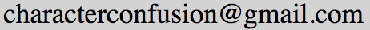

你好！Once you get past the basics in your chinese learning,
an increasing number of characters start to look the same...
衰， 哀， 衷。。。 列, 例, 烈。。。 型， 坚。。。
It can become hard to distinguish and remember characters that are made up of the same radicals or groups of radicals...
Fsor example "俞"。。。 俞，输，偷，愈，喻，愉，。。。
We used to keep a list of these in word processor to help us with our language learning,
but the document started to get rather long and a bit clumsy to use...
We thought others must be having the same problems we are,
so Character Confusion was born! Its not quite the finished product just yet,
but we are adding new words all the time.
We hope it helps you as much as it has helped us.
Any errors or characters that you would like to see, drop us a line!
